Al's Cassandra 2.1 Tuning Guide (2015)
[[TOC]]
Assumptions
- Jr. Systems Administrator level Linux CLI skills
- familiarity with Cassandra 2.1 and/or Datastax Enterprise 4.7
- basic statistics
Errors, Omissions, and Updates
This guide is not intended to be complete and focuses on techniques I've used to track down performance issues on customer clusters.
This version of the guide has not had a lot of peer review, so there may be some mistakes as well as things I'm just outright wrong about.
If you find any errors, please (really!) submit an issue at https://github.com/tobert/tobert.github.io.
Go-to Observation Tools
Observation is a critical skill to develop as a systems administrator. A wide variety of tools are available for observing systems in different ways. Many of them use the same few system metrics in different ways to provide you with a view into your system. Understanding low-level metrics (e.g. /proc/vmstat) allows you to better reason about higher-level displays such as OpsCenter graphs.
It's important to remember that most metrics we consume are some kind of aggregate; computers today are so fast that precise bookkeeping is too expensive to do all of the time. The critical implication of this is that we have to read between the lines; averages lie and the larger the sample is, the larger the lie.
Monitoring systems are tempting choices for gathering performance metrics, but they usually end up having to trade off resolution for economy of storage and rarely have a resolution higher than 1 sample/minute. Low-resolution metrics are certainly useful for capacity planning, useless for performance tuning. One exception is collectd + related tooling configured at a 10s resolution by default. This is much better than average but not good enough for all situations, but still check it out.
dstat
dstat is by far my favorite tool for observing performance metrics on a Linux machine. It provides the features of many tools all in one with high-resolution (1s). My go-to command to start it is:
dstat -lrvn 10
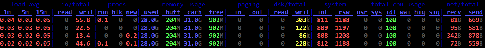
That runs dstat with the load average (-l), disk IOPS (-r), vmstats (-v), and network throughput (-n). The 10 tells dstat to keep updating the current line every second and roll to a new line every 10 seconds. It can do fancier like report per-disk metrics and per-network interface, not to mention all of the various plugins. Dig in. This the most useful stats tool on the Linux command line. If you ask me for help, be prepared to get screenshots of a few minutes' activity like the one above.
Reading the Matrix: I leave dstat running inside GNU Screen (or tmux if you prefer) pretty much all the time I'' connected to a cluster. Even when there aren't problems. Maybe especially then. While running benchmarks or production load, I'll flip through my screens (ctrl-a n) and glance at the dstat output. Once it has been running for a little while, the whole terminal should be full. What I'm looking for is vertical consistency (or lack thereof) and outliers. On a fully warmed-up system, memory should be around 95% in-use, with most of it in the cache column. CPUs should be in use with no more than 1-2% of iowait and 2-15% system time. The network throughput should mirror whatever the application is doing, so if it's cassandra-stress, it should be steady. If it's a Hadoop job writing in big batches, I'll expect big spikes. Think through the workload and learn what to expect and learn what is normal.
reading vmstats
I am a huge fan of dstat. Back in the Bad Old Days, I had to switch between 3-4 tools to get an idea of how a system was doing. With dstat I can see all the key metrics in one view and that is important. With a snapshot every 10 seconds, a full-screen terminal can show me the last few minutes of data, making it easy to scan the columns visually for patterns and anomalies. This is plain old pattern recognition most of the time; even without knowing what the stats mean, you should be able to correlate changes in system stats with changes in the client workload. For practice, fire up dstat on an idle Cassandra node, then fire up a simple cassandra-stress load. The change in metrics over the first couple minutes of load are instructive. How long does it take to level out? Does it level out or are metrics swinging wildly? Once the patterns are identified, then it's time to understand whats happening under the hood. Going from left to right of my usual dstat -vn 10:
run/blocked/new tasks
These show how many processes or threads were running/blocked/created during the sample window. run=~n_cores is ideal for ROI/efficiency, but makes a lot of admins nervous. run=2*n_cores isn't necessarily bad. run>cores is healthy with some head room. Any blocked processes is considered bad and you should immediately look at the iowait %. 1-2% iowait isn't necessarily a problem, but it usually points at storage as a bottleneck.
memory
Memory is perhaps the easiest. Used will usually be your heap + offheap + ~500MB. If it's significantly higher, find out where that memory went! Buffers should be a couple hundred MB, rarely more than a gigabyte. Cache should account for almost all the remaining memory if data > RAM. Free memory should be in the 200-300MB range unless the working data size is smaller than installed memory.
swap
dstat shows the swap columns along with memory. These should always be zeroes. Any swap activity whatsoever is a source of hiccups and must be eliminated before anything else.
disk throughput
This tells you how many bytes are going in and out of the storage every second. It is fairly accurate and tends to be more useful than IOPS. There isn't a standard range here. Try saturation testing the cluster with large objects to find out what the high end is, then try to size the cluster/tuning to keep it 25% or so below peak load, or more if there is a tight SLA. You will often see activity on the disks after a load test has completed and that's most likely compaction.
interrupts (int) & context switches (ctx)
An interrupt occurs when a device needs the CPU to do something, such as pick up data from the network or disks. Context switches occur when the kernel has to switch out a task on the CPU. Most interrupts are tied to a ctx, which is why ctx is almost always > interrupts. On a healthy system, ctx should be 20-40% higher than interrupts. If it's a lot higher, take a look at system call counts with strace. futex is almost always the top call and indicates a high amount of lock contention.
user/system/idle/wait/hiq/siq CPU time
User time is CPU time used to run userland processes, i.e. JVM threads. System time is time spent in kernel code. Idle time is exactly as it sounds. hiq/siq are for time spent processing hardware and soft interrupts. These are usually zeroes but you'll occasionally see siq time under heavy load. A few % is fine. Any more indicates a serious problem with the kernel and/or hardware.
network send/recv
Shows the amount of data flowing over the network. I can saturate 10gig links with Cassandra 2.1 and large objects, so this is more important to look at than it has been in the past. This shows how much data is flowing over CQL and storage protocols. The differential between network / disk io / CPU usage gives a good picture of how efficiently a system is running. I do this in my head….
sjk-plus
https://github.com/aragozin/jvm-tools is the newest addition to the stable and has one tool in particular that is useful for DSE: ttop a.k.a. "thread top", which is exactly what it sounds like. While top and htop are useful for looking at processes, they cannot tell which JVM thread is which and that's where ttop comes in. It's a single jar so it's easy to push to a machine and does not require any GUI so it works fine over ssh. So far, I've found the following command to be the most useful:
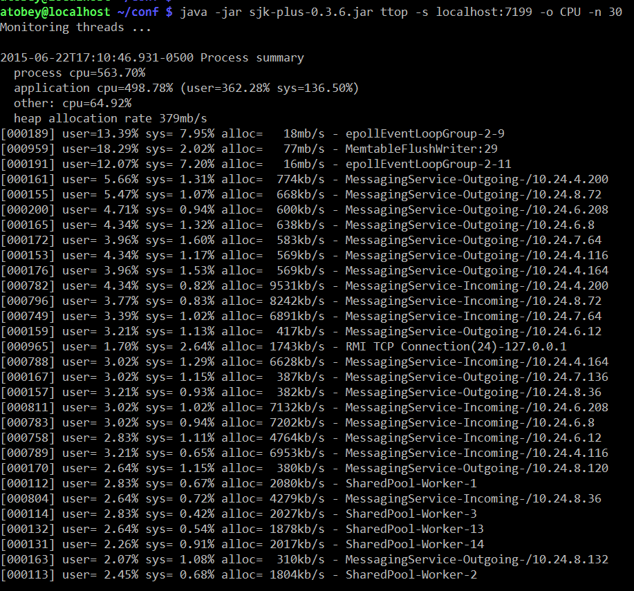
Which threads trend towards the top is workload-dependent. Most threads in DSE are named except for all the stuff in the shared pool, which is a mess of things unfortunately. On the upside, in my observations of clusters under load they are not a common source of problems.
The real killer feature is the heap allocation rates, which are directly correlatable to GC work. Try setting -o ALLOC instead of CPU to see which threads are putting pressure on GC.
htop
Most Linux users are familiar with the 'top' command but it's fairly limited in what it can display and doesn't look as nice. htop has a nice default display that shows per-core load and all the threads. It can also be configured by hitting F2, which is occasionally handy when you want to sort by specific fields or display something outside the defaults, e.g. soft page faults.
In the following screenshot, system time is red, nice time is blue, and user time is green. This may not be consistent across terminals or themes. To see the legend, hit the 'h' key.
@phact recommends enabling "[x] Detailed CPU time" under Setup (F2) to make things like iowait and steal time visible. Without the option, they appear to be unused capacity, which is misleading.
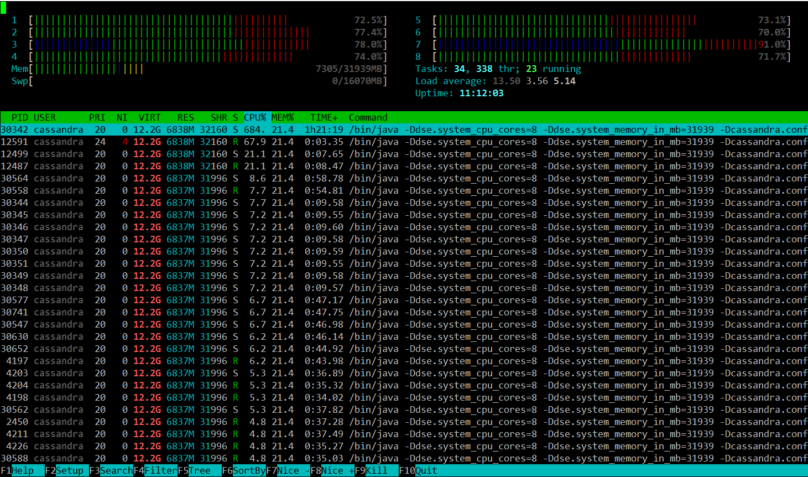
powertop and i7z
Powertop is not often useful, but is worth checking at least once if you're seeing odd fluctuations in performance on bare metal. What you're looking for is the second tab, so start it up with 'sudo powertop' then hit tab once to get to the "Idle stats" tab. This will show you the "C-states" of the processors and how much time is being spent in them. In short, the higher the C-state number, the higher the latency cost to come out of it. C1E-HSW is cheaper than C3-HSW and so on. A lot of articles about latency tuning recommend disabling C-states altogether, but I don't think this is responsible or necessary. You probably want to disable the deeper C-states (>3) for Cassandra nodes that will be busy. The power management code in the kernel should handle the rest.
The next tab is "Frequency stats". This will show you if frequency scaling is enabled on the CPU. In general, frequency scaling should never be enabled on Cassandra servers. Even if it "works" (and it does), it makes the TSC clock (the fastest one) unstable, causing more clock drift, which is bad for Cassandra systems. Modern Xeon and AMD processors have specializations for making the TSC more stable, so it's worth measuring before you give up on it.
The next couple tabs aren't very useful for Cassandra work, but the last one is in a non-intuitive way. You want all of the items in the "Tunables" tab to say "Bad!" Power management and high performance are almost always at odds. You can safely ignore devices that aren't in use by Cassandra, e.g. USB controllers and sound devices.
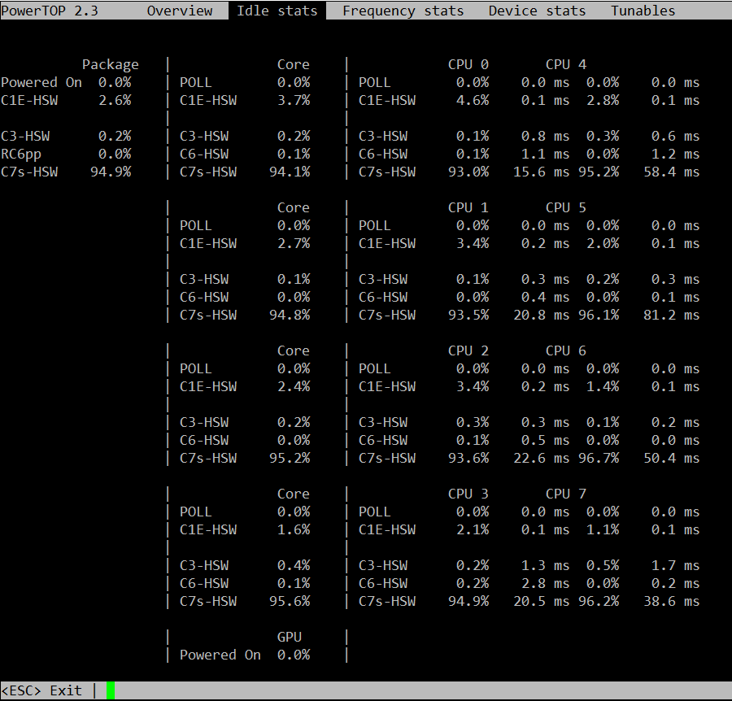
i7z is an alternative to powertop that was brought to my attention but I have not tried it. https://code.google.com/p/i7z/
/proc
Most of the stats displayed by the tools already discussed come from text files in /proc. dstat reads /proc/loadavg for the load average, /proc/stat for the VM stats, /proc/diskstats for disk IO, and so on. A few files are really handy for quickly checking things that aren't exported by the usual tools.
For example, hugepages. In my experience, transparent hugepages aren't (usually) a problem for Cassandra like they are for many other databases. That said, you need to be able to know if your JVM is using them or not, so the easy thing to do is:
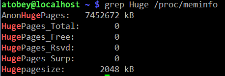
If the AnonHugePages is slightly larger than your heap, you're all set with THP. If you thought you disabled it, restart Cassandra again to get back to 4K pages.
Pro tip: you can make a top-like view of /proc files using the watch(1) command, e.g.
watch grep Dirty /proc/meminfo
/proc/interrupts is useful for figuring out which CPUs are handling IO. It is often too large to display on a screen, so a little awk or scripting may be in order to get it down to size. For quick checks, simply cat'ing the file will do.
dmesg
dumps the kernel's error buffer to stdout. Sometimes you find things really quickly, sometimes not. I almost always look at it on both healthy and problematic systems to see if anything is going on. For example, if an application has been OOM killed, there will be a detailed report in the dmesg log. The error buffer is a statically-sized ring, so sometimes when things are really hairy the important information will get scrolled off, forcing you to grep around in /var/log.
strace
a.k.a. the life saver. Strace has helped me discover obscure failures more than any other tool in my toolbox. The simplest usage of strace involves printing out every system call made by a process. Idle Cassandra systems make a huge number of system calls, so filtering with the -e flag is highly recommended. It can fork a process for tracing by prefixing a command (e.g. strace ls) or you can attach to a running process with -p PID. The -f flag is required to get useful dumps from Cassandra - it makes strace attach to all tasks (threads) in a given process.
In order to trace a particular subsystem, e.g. networking, use the -e flag. There are some preset groups of syscalls like "network", “file”, and o hers. Check out the man page.
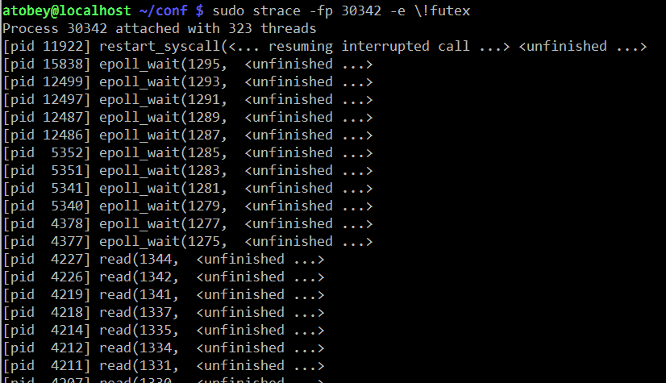
One of the more useful ways to use strace with Cassandra is to see how often
the futex() syscall is being used. This is interesting because the syscall
is only called on contended locks. For that, use
strace -f -c -e futex -p $PID. Let it run for a few seconds then hit Ctrl-C.
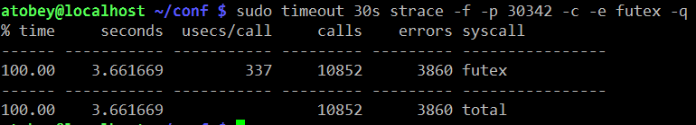
smartctl
Most hard drives made in the last decade support a protocol called SMART. SATA and SAS SSDs support it as well and it's the first place I look when I suspect a problem with rive. It isn't always installed by default. The package is usually called "smartmontools".
If the system has anything but a simple JBOD controller (e.g. SATA AHCI, LSI SAS x008), you may need to specify the device type so smartctl can query the HBA properly. The man page has instructions for doing so.
The most important section for troubleshooting is the attributes, specifically the RAW_VALUE column. The other columns often have unreliable values, especially the TYPE column, which always looks scarier than things really are.
Here is a screenshot from "smartctl -A /dev/sdc" on a Samsung 840 Pro SSD. This is where you look to find out if flash cells are dying or you suspect other kinds of errors.
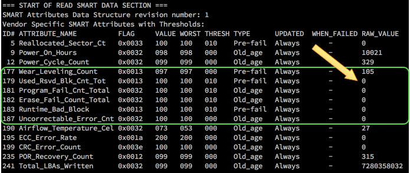
The full smartctl -a output for an HDD and SSD are available as a gist: https://gist.github.com/tobert/c3f8ca20ea3da623d143
iperf
is a network load testing tool that is quick & easy to use. I use it to find the real capability of a network interface, which is often surprisingly lower than advertised. On bare metal, you should expect to be able to get > 900mbit/s (remember to divide by 8 for bytes!) on 1gig links. For 10gig links, you may need to use the --parallel option.
These screenshots show how simple it is to use iperf to find out how much bandwidth I can get between my Linux workstation and my Mac over wifi.
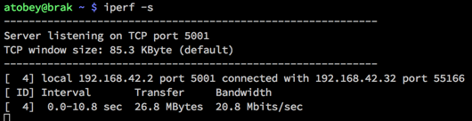
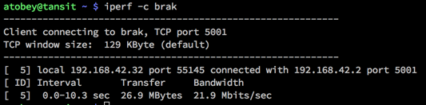
There are a number of switches available, but most of the time you don't need them. The most important two to add are --time and --num to set the amount of time to run the test or the number of bytes to transmit, respectively.
pcstat
https://github.com/tobert/pcstat is a tool I wrote out of frustration. One question we often have is whether or not a given file is being cached by Linux. Linux itself doesn't export this information in an easy way, so pcstat gets it via the mincore(2) system call. The easiest way to get it if you have Go installed is "go get github.com/tobert/pcstat". This will place a pcstat binary in $GOPATH/bin that you can scp to any Linux server.
pcstat -bname /var/lib/cassandra/data/*/*/*-Data.db
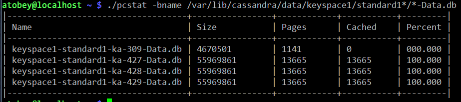
cl-netstat.pl
https://github.com/tobert/perl-ssh-tools Another custom tool. This one logs into your whole cluster over ssh and displays a cluster-wide view of network traffic, disk IOPS, and load averages. I use this all the time. It's a bit of a pain to install, but it's worth it. By default it updates every 2 seconds.
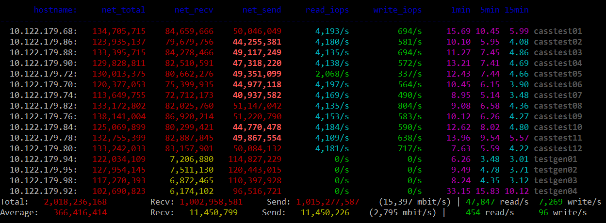
Saturation Testing with cassandra-stress
We really need an entire guide like this one for cassandra-stress. For most performance tuning, a very simple cassandra-stress configuration is sufficient for identifying bottlenecks by pushing a saturation load at the cluster. It is important to keep in mind that sustained saturation load should never be used to provide guidance to customers; by definition it is unsustainable. It is, on occasion, useful to find the max saturation load, then dial it back by 10-20% as a starting point for finding a cluster's maximum sustainable load.
There are two workloads in particular that expose most issues quickly, one using small objects and the other using large objects.
small objects for finding TXN/s limits
Small objects running at maximum transaction throughput help expose issues with network packets-per-second limits, CPU throughput, and as always, GC. I've been unable to get enough throughput with small objects to stress 10gig networks or good SSDs; for those move on to large objects. This is the easiest test to run and is by far the most common, since it requires almost no configuration of cassandra-stress.
I usually put my cassandra-stress commands in little shell scripts so it's easier to edit and I don't have to rely on command history or, horror of horrors, typing. For example, here's what my small-stress.sh looks like:
#!/bin/bash
export PATH=/opt/cassandra/bin:/opt/cassandra/tools/bin:$PATH
cassandra-stress \
write \
n=1000000 \
cl=LOCAL_QUORUM \
-rate threads=500 \
-schema "replication(factor=3)" \
-node 192.168.10.12
large objects for finding MB/s limits
Many of the times I'' asked to look at a cluster, IO is usually suspect. Small objects tend to run up against CPU or GC bottlenecks before they have a chance to do enough IO to show whether I'm tuning in the right direction. Using large objects helps here.
In this example, I'm writing partitions with 32 columns at 2K each for a total of 64K per partition. You will probably need to try some different values to get things moving. Sometimes disabling durability on the CF or putting the CL on tmpfs is useful to reduce CPU/GC load and move more IO through flushing.
cassandra-stress \
write \
n=1000000 \
cl=LOCAL_QUORUM \
-rate threads=500 \
-col "size=fixed(2048)" "n=fixed(32)" \
-schema "replication(factor=3)" \
-node 192.168.10.12
cassandra.yaml
There are three major places to find settings that impact Cassandra's performance: the java command-line (GC, etc.), the schema, and cassandra.yaml. Probably in that order. The inaccuracy of some comments in Cassandra configs is an old tradition, dating back to 2010 or 2011. The infamous "100mb per core" atrocity dates back a ways, but we're not here to talk about history. What you need to know is that a lot of the advice in the config commentary is misleading. Whenever it says “number of cores” or “number of disks” is a good time to be suspicious. I'm n't going to rewrite the whole yaml file here, but instead cover the few settings that should always be checked when tuning.
The Commitlog Bug in 2.1
a.k.a. https://issues.apache.org/jira/browse/CASSANDRA-8729
^ UPGRADE TO >= Cassandra 2.1.9 or DSE 4.7.3 and set:
commitlog_segment_recycling: false
Prior to 2.1.9:
The Jira linked above has most of the gritty details. TL;DR, the workaround is to set commitlog_segment_size_in_mb > commitlog_total_space_in_mb which causes Cassandra to drop segments after use rather than reuse them. '
memtables & flushing
One of the most common tweaks we have to make is bumping memtable_flush_writers on systems with sufficient resources. The advice in the stock yaml isn't bad in this case but it isn't very nuanced. Generally you can start at 4 and see what happens. If you're seeing dropped mutations under saturation load, try going as high as 8 but probably not much higher since 8 blocked flushwriters probably means your disks aren't up to the task and the load needs to be scaled back.
I think memtable_flush_writers and memtable_cleanup_threshold should always be set together. The default formula is: 1 / (memtable_flush_writers + 1) so if you have a lot of flush writers, your cleanup threshold is going to be very low and cause frequent flushing for no good reason. A safe starting value for a cluster with few tables is 0.15 (15% of memtable space). If you have lots of active tables, a smaller value may be better, but watch out for compaction cost.
Note: memtables aren't compressed so don't expect compressed sstable sizes to line up.
memtable_allocation_type: offheap_objects
Offheap memtables can improve write-heavy workloads by reducing the amount of data stored on the Java heap. 1-2GB of offheap memory should be sufficient for most workloads. The memtable size whould be left at 25% of the heap as well, since it is still in use when offheap is in play.
An additional performance boost can be realized by installing and enabling jemalloc. On common distros this is usually a yum/apt-get install away. Worst case you can simply install the .so file in /usr/local/lib or similar. Instructions for configuring it are in cassandra-env.sh.
concurrent_{reads,writes,counters}
Like some other options, the recommendations in the comments for these are
misleading. Increasing these values allows Cassandra to issue more IO in
parallel, which is currently the best way to push the Linux IO stack. You may
also want to take a look at /sys/block/
sstable compression
The CPU tradeoff is almost always a net win compared to iowait or the wasted space on the drives. Turning compression off is sometimes faster. The main tunable is chunk_length_kb in the compression properties of a table. The default chunk length is 128K which may be lowered wither at CREATE TABLE time or with ALTER TABLE.
streaming
Make sure to always set streaming_socket_timeout_in_ms to a non-zero value. 1 hour is a conservative choice that will prevent the worst behavior.
https://issues.apache.org/jira/browse/CASSANDRA-8611
The Java Virtual Machine
Java 8
Every cluster I've touched for the last couple months has been running Java 8 with no problem. JDK8 has some nice improvements in performance across the board, so some clusters will pick up some additional headroom just by upgrading. Java 7 is deprecated by Oracle and is on its way out. That said, if for some reason (e.g. inverse-conservative policies) you have to stick with JRE7, at least try to get the last update release.
OpenJDK
There is some remembered pain around OpenJDK that as far as I can tell dates back to the initial releases of it in Fedora where it was JDK6 with no JIT and a bunch of GNU Classpath and Apache Harmony things bolted on. That didn't last too long before Sun finished OSSing the important parts of Hotspot, making the OpenJDK we have today that is, from the server VM's perspective, identical to the Oracle releases of Hotspot. The critical thing to watch out for today with OpenJDK is OS packages. Java 8 took a long time to adopt because the early releases were buggy. Do yourself a favor and check the full version of any OpenJDK before trusting it. If it's out of date and you still want to use OpenJDK, check out the Zulu packages produced by Azul.
heap estimation & GC selection
If you haven't read the bit about offheap from above, please check that out. In general, our default heap size of 8GB is a good starting point for Cassandra-only workloads. When adding in Solr, you will almost always want to increase the heap. I've seen it set anywhere from 8GB to 32GB in production systems. I've tested up to 256GB with G1, and while it works great, it's a waste of pressious page cache space. G1 works best at 26-32GB, start in that range if you have the spare RAM. When messing around with GC, you should always enable GC logging. With newer JDK7 builds and any JDK8 build, GC log rotation is built-in so there's no reason to have it disabled, especially in production. Some folks prefer to leave it off in production by default because GC log writes occur during STW and are synchronous, which may introduce additional hiccups.
Now that you have GC logging enabled you have a choice: stick with CMS (the devil we know) or switch to G1GC (the devil we barely know). You can get more throughput from CMS, but it takes careful planning and testing to achieve it, whereas with G1, you can get good performance without a lot of tweaking.
useful settings for any (parallel) GC
By default, Hotspot caps GC threads at 8, seemingly because of some legacy assumptions combined with unrelated side-effects on SPARC. In any case, if the target system has more than 8 cores, you may want to allow GC to use all of them. This has been observed to reduce STW durations. I haven't seen any negative side-effects. As the comments say, HT cores don't count. See also: "EC2 cores are not what you think they are".
# The JVM maximum is 8 PGC threads and 1/4 of that for ConcGC.
# Machines with > 10 cores may need additional threads.
# Increase to <= full cores (do not count HT cores).
#JVM_OPTS="$JVM_OPTS -XX:ParallelGCThreads=16"
#JVM_OPTS="$JVM_OPTS -XX:ConcGCThreads=16"
Reference processing isn't usually a big deal for Cassandra, but in some workloads it does start to show up in the GC logs. Since we pretty much always want all the parallel stuff offered by the JVM, go ahead and enable parallel reference processing to bring down your p99.9's.
# Do reference processing in parallel GC.
JVM_OPTS="$JVM_OPTS -XX:+ParallelRefProcEnabled"
CMS
The 100mb/core commentary in cassandra-env.sh for setting HEAP_NEWSIZE is wrong. A useful starting point for CMS is 25% of the heap. For some workloads it may go as high as 50% of the heap, but start at 20-25% and see what happens. Before moving onto testing, add the following settings derived from CASSANDRA-8150. There's some good stuff in there, but be careful not to haphazardly combine all the settings from the various comments. They don't always mix well.
TODO: add Pierre's notes about CMS
# [http://blog.ragozin.info/2012/03/secret-hotspot-option-improving-gc.html](http://blog.ragozin.info/2012/03/secret-hotspot-option-improving-gc.html)
JVM_OPTS="$JVM_OPTS -XX:+UnlockDiagnosticVMOptions"
JVM_OPTS="$JVM_OPTS -XX:ParGCCardsPerStrideChunk=4096"
# these will need to be adjusted to the workload; start here
JVM_OPTS="$JVM_OPTS -XX:SurvivorRatio=2"
JVM_OPTS="$JVM_OPTS -XX:MaxTenuringThreshold=16"
# Branson thinks these are cool. TODO: describe what these do.
JVM_OPTS="$JVM_OPTS -XX:+CMSScavengeBeforeRemark"
JVM_OPTS="$JVM_OPTS -XX:CMSMaxAbortablePrecleanTime=60000"
JVM_OPTS="$JVM_OPTS -XX:CMSWaitDuration=30000"
CMSScavengeBeforeRemark: triggers a Young GC (STW) before running CMS Remark (STW) phase. The expected effect is to reduce the duration of the Remark phase.
CMSWaitDuration: once CMS detects it should start a new cycle, it will wait up to that duration (in millis) for a Young GC cycle to happen. The expected effect is to reduce the duration of the Initial-Mark (STW) CMS phase.
SurvivorRatio sizes the Eden and the survivors. SurvivorRatio=N means: divide the young generation by N+2 segments, take N segments for Eden and 1 segment for each survivor.
MaxTenuringThreshold defines how many young GC an object should survive before being pushed in the old generation. A too high value increases the Young GC pause time (because of extra copying). A too low value increases pressure on CMS.
G1GC
Recommendation: pick a node, flip its cassandra-env.sh over to the config block below, then come back here and read while that node generates some GC logs for you to look at.
G1GC is the newest garbage collection backend in Hotspot. It was introduced during Java 6 and gradually improved through Java 7 and seems to be solid for production as of Java 8u45. I do not recommend using G1 on any JRE older than Hotspot 8u40. There have been changes to the algorithm between u40 and u45 and I expect more as adoption increases, so the latest release of Java 8 is recommended. Hotspot 9 is expected default to G1GC, so it's time to start learning how it works.
The main benefit of the G1 collector is what they call ergonomics. Tuning CMS is a black art that requires a lot of iteration to dial in. G1 is usually good out of the box and can be dialed in with just a couple parameters to the JVM. According to the various docs on the web, CMS shoots for 1% or less of application CPU time spent in GC while G1 allows for up to 10%. It's a good deal at half the price, and the observed CPU usage is usually much lower than 10%.
It is critical that you comment out the -Xmn line when switching to G1 Perhaps my favorite feature in G1 is that the eden size is calculated automatically to try to meet the latency target. It also automatically sets the tenuring threashold. It does a decent job and may even be useful to try as a way to estimate the -Xmn for CMS (switch to G1, run a load, grep Eden /var/log/cassandra/gc.log.0.current).
There are two main settings to use when tuning G1: heap size and MaxGCPauseMillis.
G1 can scale to over 256GB of RAM and down to 1GB (6GB minimum is recommended) The first thing to try in many situations is to bump the heap by a few GB and see what happens. Sometimes it helps, sometimes it doesn't. The results are usually obvious within a few minutes, so I'll often go from 8GB to 16GB to 32GB (when available) to see if it helps. Adding more heap space allows G1 to "waste" more heap on uncollected garbage that may be mixed with tenured data. If it is under pressure to reclaim space for eden, you will see significant memory copy time in the GC logs. That's bound by the memory bandwidth of the system and there isn't much we can do about it, so increasing the heap to allow more slack is the easy path.
The other tunable is -XX:MaxGCPauseMillis=n. The default in Hotspot 8 is 200ms. When testing G1 on lower-end hardware (mobile CPUs, EC2) it was observed that throughput suffered too much with the 200ms pause target. Increasing it to 500ms keeps the average STW pause below the default timeouts in cassandra.yaml while allowing for better throughput. The critical thing to keep in mind is that this is a target and nothing is guaranteed; STW on fast machines might hover around 120ms and never even approach the target. Slower machines may exceed the target occasionally, which is why your timeouts in cassandra.yaml should allow for some slack.
# Use the Hotspot garbage-first collector.
JVM_OPTS="$JVM_OPTS -XX:+UseG1GC"
# Main G1GC tunable: lowering the pause target will lower throughput and vise versa.
# 200ms is the JVM default and lowest viable setting
# 1000ms increases throughput. Keep it smaller than the timeouts in cassandra.yaml.
JVM_OPTS="$JVM_OPTS -XX:MaxGCPauseMillis=500"
# Have the JVM do less remembered set work during STW, instead
# preferring concurrent GC. Reduces p99.9 latency.
JVM_OPTS="$JVM_OPTS -XX:G1RSetUpdatingPauseTimePercent=5"
# Start GC earlier to avoid STW.
# The default in Hotspot 8u40 is 40%.
JVM_OPTS="$JVM_OPTS -XX:InitiatingHeapOccupancyPercent=25"
# For workloads that do large allocations, increasing the region
# size may make things more efficient. Otherwise, let the JVM
# set this automatically.
#JVM_OPTS="$JVM_OPTS -XX:G1HeapRegionSize=32m"
useful GC log highlights
Set up the above config and kick off some load. Start tailing the GC log and wait for the eden size to stabilize. It often gets close within a few seconds of running load, but give it a minute or so to be sure then start looking at the detailed information. Each GC log section is rather large so I'm not going to document it here. There are three lines that provide most of what we need to know.
[Object Copy (ms): Min: 157.6, Avg: 161.5, Max: 162.2, Diff: 4.6, Sum: 1292.0]
Object Copy time is embedded in a larger block of stats. With most of the systems I've examined, this is where the vast majority of the STW time is spent, so the trick is to tune the JVM so that it does less copying of objects. As mentioned earlier, start with adding heap space and offheap memtables. Compaction is particularly pragmatic (as observed through jvisualvm or sjk-plus ttop) and there doesn't seem to be much we can do about it. Throttling compaction can even make it worse by forcing Cassandra to keep objects in memory longer than necessary, causing promotion which leads to memory compaction which is bound by memory bandwidth of the system.
[Eden: 4224.0M(4224.0M)->0.0B(4416.0M) Survivors: 576.0M->448.0M Heap: 6334.9M(8192.0M)->2063.4M(8192.0M)]
This is where you can see how much of the heap is being used for eden space. It will go to 0.0B every time this is printed, since with the default logging it only prints it after a STW. The survivors number under G1 rarely go over 1GB and usually hover in the 200-300MB range. If it goes over 1GB there might be something wrong in the DB worth investigating. The last part, "Heap:" shows the total amount of allocated heap space. This will vary the most. If it hovers at 90-100% of the total heap, you're probably using Solr and have a lot of data and will need a bigger heap.
[Times: user=1.73 sys=0.00, real=0.20 secs]
I don't typically use these final numbers for much tuning, but they're good to glance at every once in a while to get an idea how much of your CPU is being burned for GC. user= represents the amount of CPU time consumed on all cores and is usually a multiple of real=. If sys is significant relative to the other numbers, it probably points at contention somewhere in the system (sometimes debuggable with strace -c). Finally, the real= part is wall-clock time and will correlate with the observable pause.
Always Pre-Touch
# Make sure all memory is faulted and zeroed on startup.
# This helps prevent soft faults in containers and makes
# transparent hugepage allocation more effective.
JVM_OPTS="$JVM_OPTS -XX:+AlwaysPreTouch"
Disable Biased Locking
Biased locking is an optimization introduced in Hotspot 1.5 that optimizes single-writer locks. It's a win in systems that have mostly uncontended locking. Cassandra is a large system with many contended locks in hot paths making this optimization counter-productive. The difference between having this enabled/disabled is difficult to detect unless the system is running close to full capacity.
# Biased locking does not benefit Cassandra.
JVM_OPTS="$JVM_OPTS -XX:-UseBiasedLocking"
https://blogs.oracle.com/dave/entry/biased_locking_in_hotspot
http://www.azulsystems.com/blog/cliff/2010-01-09-biased-locking
http://mechanical-sympathy.blogspot.com/2011/11/biased-locking-osr-and-benchmarking-fun.html
Thread Local Allocation Blocks
TLABs are enabled by default in Cassandra, but the option is mixed in with some CMS stuff so it occasionally gets dropped by accident when switching to G1 so it's worth calling out as important. With the number of threads in play in a Cassandra instance, it's worth also enabling TLAB resizing if only to recover the TLAB from threads that rarely wake up or do significant allocation. Right now this is just a theory, but being able to increase the size of TLAB is likely a big win for Cassandra since a few threads (e.g. compaction) allocate large amounts of memory making any opportunity to avoid a GC lock a big win. That's the theory and although a statistically significant difference between +/-ResizeTLAB could not be found in simple tests, this is a common and practical optimization that should be enabled.
# Enable thread-local allocation blocks and allow the JVM to automatically
# resize them at runtime.
JVM_OPTS="$JVM_OPTS -XX:+UseTLAB -XX:+ResizeTLAB"
other JVM applications
A good chunk of applications using Cassandra are built on the JVM. Quite often even our own tools (e.g. cassandra-stress) have simple GC and tuning settings that limit performance. Copying Cassandra's settings is not the answer; many of the things that are good for Cassandra are bad for smaller/simpler apps. That said, here's the settings I use for G1 with cassandra-stress and many of the other tools in the distribution, as well as other JVM apps. It's not universal, but perhaps a better starting point than the defaults.
java -server -ea \
-Xmx8G -Xms1G \
-XX:+UseG1GC \
-XX:+AggressiveOpts -XX:+UseCompressedOops \
-XX:+OptimizeStringConcat -XX:+UseFastAccessorMethods \
$MAIN
Compaction
The most visible deferred cost of writing to Cassandra is compaction. I find it useful to describe it in terms of compound interest: you get to write at every high throughput now (borrowing), but at some point you have to redo all that IO (principal) with a fair amount of waste (interest) to maintain acceptable reads (credit score).
concurrent_compactors
On SSDs I start at 4 and go up from there if the workload requires it. The biggest problem with huge numbers of compactors is the amount of GC it generates, so make sure to watch your GC logs or p99 client latency to make sure that additional compactors doesn't ruin your latency.
Whether or not to throttle compactions should follow the same reasoning. With Cassandra 2.1, compaction properly takes advantage of the OS page cache, so read IO isn't as big of a deal as it was on 2.0. Limiting the amount of IO allowed for compaction also cuts the amount of GC generated by the compaction code, so it's still a good idea even on very fast storage.
STCS
This is the original deal and is by far the most widely deployed and tested compaction strategy. This should be the default choice when you don't know what to do or have insufficient information. I haven't done much tuning of the various knobs available, so please let me know if there's anything interesting I should be looking at.
LCS
Use LCS when you need to fill up disks past 50% or have really tight read SLAs. Otherwise, stick with STCS.
LCS has significant issues with streaming / resulting compaction with node densities > 800GB especially. This is getting addressed in Cassandra 2.2, but is a real issue when bootstrapping new nodes or data centers currently.
DTCS
http://www.datastax.com/dev/blog/dtcs-notes-from-the-field
System RAM
Cassandra uses memory in 3 ways: Java heap, offheap memory, and OS page cache (a.k.a. buffer cache but only uncool people call it that anymore). You want as much RAM as you can get, up to around 256GB. For a read-heavy system it might even make sense to go into the 512GB-2TB range (all the major server vendors have 2TB servers now), but really you want to scale out rather than up whenever possible.
The Page Cache
Cassandra relies heavily on the operating system page cache for caching of data on disk. Every read that is served from RAM is a read that never gets to a disk, which has a systemic effect of reducing load across the board. Every page of RAM that is available for caching helps, which is why I'll cheerfully recommend 128GB of RAM even though Cassandra itself only consumes a fraction of it directly.
http://queue.acm.org/detail.cfm?id=1814327
Swap (Always Say Never)
Prior to the 2000's, RAM was often the biggest line item on server quotes. I remember spending more than $80,000 for 8GB of RAM in a PA-RISC system in ~2001. When RAM is $10,000/GB and disk is $250/GB, swap makes sense. Even on those systems any swap usage was catastrophic to performance, which is why the business was willing to spend the big numbers on RAM. In today's age of < $100 for an 8GB DIMM, using swap in any latency-sensitive system is silly.
Always disable swap. In addition, always set /proc/sys/vm/swappiness to 1 just in case it gets reenabled by accident. The default value is 60, which tells the kernel to go ahead and swap out applications to make room for page cache headdesk. With both settings in place, the system should never swap and that's one less thing to think about when tracking down latency problems.
Recommendation:
swapoff -a
sed -i ‘s/^\(.*swap\)/#\1/' /etc/fstab
echo "vm.swappiness = 1" > /etc/sysctl.d/swappiness.conf
sysctl -p /etc/sysctl.d/swappiness.conf
numactl & -XX:+UseNUMA
The quickest way to tell if a machine is NUMA is to run "numactl --hardware".
One of the big changes to systems in the last decade has been the move from the Intel Pentium front-side bus architecture to Non-Uniform Memory Architecture, a.k.a. NUMA. Really, it's two changes in one: modern x86 CPUs have integrated the memory controller onto the same die. This means that in a multi-socket system, there are two memory controllers. Rather than making one CPU have to ask the other for all memory, each CPU gets a share of the memory (usually symmetrical), and they only talk to each other when a process executing on one CPU needs memory located on the other CPU's memory bus. There are a bunch of optimizations in the hardware to make this as painless as possible, but as usual, there's still a cost in latency. When an application or thread only uses memory local to the CPU, things go really fast and when that fails, things go slower.
By default, the bin/cassandra script will prepend the JVM command with
numactl --interleave. This is a good default that will enable decent performance on
most systems. That said, there are more options for NUMA systems that may open
up additional performance. One is to comment out the numactl --interleave in
bin/cassandra and add -XX:+UseNUMA to cassandra-env.sh. This instructs the JVM
to handle NUMA directly. The JVM will allocate memory across NUMA domains and,
according to docs, will divide GC across domain domains. It does not do any
thread pinning though (the code exists but is a noop on Linux). I've tested
UseNUMA with a 256GB heap and it does work, but it's not necessarily
--interleave.
The fastest option is for multi-JVM setups on NUMA where you can use numactl --cpunodebind to lock a JVM to a particular NUMA node so all memory is local and threads are not allowed to execute on remote cores. This is the highest performance option, but does limit the process to one socket, so use it with caution. There are also problems with availability in the face of a server failure, so please be careful if you try this route.
http://frankdenneman.nl/2015/02/27/memory-deep-dive-numa-data-locality/
zone_reclaim_mode, destroyer of p99s
This is usually disabled by default, but if by chance it is enabled, you will likely observe random STW pauses caused by the kernel when zone reclaim fires.
https://www.kernel.org/doc/Documentation/sysctl/vm.txt (at the very bottom)
http://frosty-postgres.blogspot.com/2012/08/postgresql-numa-and-zone-reclaim-mode.html
http://docs.datastax.com/en/cassandra/2.1/cassandra/troubleshooting/trblshootZoneReclaimMode.html
Disks
The slowest part of a node is going to be either the disk or the network. Even in the age of SSDs, it's difficult to predict which is best. A good 10gig network can get below 40µs latency, which can keep up with SATA and SAS. This is why we're starting to see SSD NAS become usable in the public clouds.
When a transaction is served entirely out of memory, the client txn latency is roughly:
memory_txn_latency + network_latency + client_latency
Cache misses are always worse:
disk_latency + memory_txn_latency + network_latency + client_latency
This is not unique to Cassandra; every durable database with data > RAM has to deal with disks as the wildcard in client latency. Cache miss latency is dominated by disk access time. No amount of magic can make that go away (though rapid read protection may hide it).
http://tobert.github.io/post/2014-11-13-slides-disk-latency-and-other-random-numbers.html
Solid State Drives (a.k.a. flash drives)
Leaving transport/HBA aside for the moment, SSD is absolutely the preferred solution for every workload. There are a few exceptions where HDD makes sense for economical reasons, but the arguments get shaky as soon as you start looking at the vast difference in latency and power consumption. SSDs have no moving parts as well, so while they can fail, it's a lot more predictable if you monitor the retired cells over SMART.
http://techreport.com/review/27909/the-ssd-endurance-experiment-theyre-all-dead
https://laur.ie/blog/2015/06/ssds-a-gift-and-a-curse/
Most flash on the market today is referred to as MLC, which usually refers to 2-level cells. This means that each flash cell can hold 2 bits of data. SLC (Single Level Cell) is difficult to find these days and is obscenely expensive so forget about it. Some Samsung drives are based on TLC (triple) to get 3 bits per cell, while SanDisk has some drives at 4 bits per cell. The base recommendation for production workloads is MLC. Some folks are testing TLC for high-volume/low-write (DTCS) workloads and having some success. YMMV.
https://en.wikipedia.org/wiki/Multi-level_cell
Hard Disk Drives (a.k.a. spinning rust)
Hard drives get the moniker "spinning rust" because they are literally a few discs made out of iron spinning while a mechanical arm moves a sensor across them to detect changes in the magnetic field. They have served us well for decades and are by far the cheapest storage available. They still show up in new systems for a few reasons:
- hardware vendors mark SSDs up by 100-2000%
- 7200RPM SATA is aroudn $0.05/GB while a Samsung 1TB TLC is $0.50
- high capacity is still easier to come by
You already know that SSDs are better, so when do HDDs make sense? Since the
preferred size of a Cassandra <= 2.1 node is still around 4-5TB, the answer is
usually never. There are exceptions, such as mostly-write workloads + DTCS where
seeking isn't as big of a problem. Sometimes the customer already bought the
machine or are mitigating against drive failures elsewhere, so they have to be
made to work. The trick to getting HDDs to perform as well as possible is to
tune things for linear IO wherever possible. Sometimes this means deeper queues
nomerges=0, nr_request=256 and sometimes it means getting more RAM. When HDDs
are the only option, get as much RAM as you can. Every cache hit in RAM means
less IO on the drive. It's not a big deal on SSDs where random IO isn't
penalized, but on an HDD that IO will probably cause a seek which is exactly the
worst thing to do to an HDD.
Transports: SATA, SAS, NVMe, PCIe, and virtualized
Most of the drives in production today are either SAS or SATA. SAS HBAs are preferred over SATA even when using SATA drives. SATA drives work fine on SAS controllers that can scale a little better. That said, in simple machines, using the onboard AHCI SATA controller is fine. One important difference that's useful to note to customers is that SAS is rated at 1 undetectable error out of 10^16 bits while SATA drives are typically in the 10^15 range. While Cassandra has multiple levels of mitigation (sstable checksums and replication), this can be a useful way to convince people to move to SAS. Since NL-SAS is basically a SATA drive with a SAS controller, they should have the same error correction as SAS, but be sure to check the data sheet for the drive.
NVMe is the new kid on the block. It is a standard similar to AHCI for SATA or UHCI for USB that specifies a hardware/driver and physical interface for PCI-Express (PCIe) flash devices that is optimized for parallelism, unlike traditional block interfaces.
For the next year or two it is really important to verify the kernel NVMe driver is up-to-date. The early releases of NVMe for Linux were riddled with bugs and missing features. Most kernels released after 2015-05 should be fine.
PCI-Express cards such as those sold by Intel, FusionIO (now SanDisk), and Samsung are still commonly deployed. These are by far the highest-performing option, with latencies measured in microseconds.
When running in a virtualized environment, a number of new variables have to be considered. The most common and easy to address problem is use of virtual IO drivers rather than emulation. Most of the public cloud images are virtio-native these days. Make sure to check. On some private clouds you may find images misconfigured to use an emulated SCSI adapter from the 1990's or even worse, an BX440 IDE adapter. These use significantly more CPU and memory bandwidth than virtio drivers that cooperate with the hypervisor to provide decent performance. That said, the best option is IOMMU access to an underlying device, but that's fairly rare. It will be more common in the near future as cloud providers roll out NVMe.
http://www.techrepublic.com/blog/data-center/how-sas-near-line-nl-sas-and-sata-disks-compare/
https://en.wikipedia.org/wiki/NVM_Express
http://tobert.org/disk-latency-graphs/
Amazon EBS, Google PD, Azure Volumes
Amazon EBS "standard" = BAD, AVOID AT ALL COSTS (literally!)
Amazon EBS "io1" or “gp2” = (notbad), go for it!.
The new SSD-backed "general purpose" EBS has a latency of 1ms or less most of the time and pairs nicely with c4.4xlarge instances. Make sure the instance is EBS optimized. Make sure to take a look at the EBS Product Details page to see how IO bursting plays out. Interestingly, if the volume size exceeds 3.4TB, the volume is automatically bumped to 10,000 IOPS which is a great deal compared to io1 volumes and especially i2.2xlarge clusters. io1 volumes are also useful but are more expensive so consider them for the commit log, but most customers will be best served by gp2.
SAN/NAS
Just say no. Friends don't let friends and all that. There are few exceptions to this rule. One is the new wave of PCI-Express DAS flash sold by EMC, Netapp, and others. These devices are quite expensive but are popping up all over the storage industry. In some SAN/NAS shops we may be able to leverage partnerships with the big storage vendors to bring in a managed flash device. The key to recognizing appropriate DAS storage is when it can be deployed as one array per rack, or one DAS box per availability zone/rack.
discovery
When getting acquainted with a new machine, one of the first things to do is discover what kind of storage is installed. Here are some handy commands:
blockdev --reportfdisk -lls -l /dev/disk/by-idlspci -v # pciutilssg_inq /dev/sda # sg3-utilsls /sys/block
IO elevator, read-ahead, IO merge
Folks spend a lot of time worrying about tuning SSDs, and that's great, but on modern kernels these things usually only make a few % difference at best. That said, start with these settings as a default and tune from there.
When in doubt, always use the deadline IO scheduler. The default IO scheduler is CFQ, which stands for "Completely Fair Queueing". This is the only elevator that supports IO prioritization via cgroups, so if Docker or some other reason for cgroups is in play, stick with CFQ. In some cases it makes sense to use the noop scheduler, such as in VMs and on hardware RAID controllers, but the difference between noop and deadline is small enough that I only ever use deadline. Some VM-optimized kernels are hard-coded to only have noop and that's fine.
echo 1 > /sys/block/sda/queue/nomerges # SSD only! 0 on HDD
echo 8 > /sys/block/sda/queue/read_ahead_kb # up to 128, no higher
echo deadline > /sys/block/sda/queue/scheduler
I usually start with read_ahead_kb at 8 on SSDs and 64 on hard drives (to line up with Cassandra <= 2.2's sstable block size). With mmap IO in <= 2.2 and all configurations >= 3.0. Setting readahead to 0 is fine on many configurations but has caused problems on older kernels, making 8 a safe choice that doesn't hurt latency.
Beware: setting readahead very high (e.g. 512K) can look impressive from the system side by driving high IOPS on the storage while the client latency degrades because the drives are busy doing wasted IO. Don't ask me how I know this without buying me a drink first.
TRIM & fstrim
Most SSDs and some virtual disks support some form of TRIM that allows the operating system to inform the device when a block is no longer referenced so that it can be erased and returned to the free space pool. This helps the disk controller do efficient wear leveling and avoid latency spikes when the free cell pool gets low.
xfs and ext4 support the 'discard' mount option, but you should not use it. The slowest part of an SSD is erasing previously used cells. This can take an eternity in computer time, tying up command slots and occasionally blocking applications. No good. There is an alternative though, and that's 'fstrim' or the 'wiper.sh' script from the hdparm package. Run one of them around once a week, one node at a time just like repair so that the whole cluster doesn't hiccup at once.
partitioning & alignment
Whenever possible, I prefer to use GPT disk labels instead of the classic MBR partition tables. GPT offers a number of advantages such as support for drives larger than 4TB and better resiliency through writing at both the beginning and end of the drive. In addition, the GPT tools on Linux usually align partitions to a 1MB boundary automatically, which avoids any potential block misalignment.
Here is one of the scripts I use for setting up GPT, MDRAID, and xfs. It should be fairly easy to adapt to other environments: https://gist.github.com/tobert/4a7ebeb8fe9446687fa8
Partition misalignment happens on drives with 4KB sectors, which is the size on all SSDs and most hard drives manufactured in the last few years. Some of these devices will emulate 512 byte blocks to support older operating systems, so you can't rely on what Linux tells you. Since it's always safe to use 4K alignment on 512 byte devices, it's best to always align on 4K boundaries or go with 1 megabyte to be safe. Intel's EFI specifications recommend aligning on 128MiB boundaries, but that's just silly.
When deploying consumer-grade flash drives, it may make sense to leave some space fallow either by not partitioning part of the drive or by creating a partition that will not be used. This free space acts as an additional reservoir of spare flash cells for the wear leveling controller in the drive to use and may extend the useful lifetime of the drive.
fio
fio is the tool of choice for benchmarking filesystems and drives.
http://tobert.github.io/post/2014-04-28-getting-started-with-fio.html
http://tobert.github.io/post/2014-04-17-fio-output-explained.html
RAID, JBOD, and LVM
JBOD
It's just a bunch of disks, how hard can it be? Take a look at CASSANDRA-7386, CASSANDRA-8329, and CASSANDRA-6696
JBOD is almost always the fastest option for storage aggregation when the software supports it, and in Cassandra's case it does, but with a few caveats. I've avoided JBOD configs for a while because of these caveats, but it looks like its time may finally be coming with Cassandra 2.2 and 3.0.
If you're stuck on huge SATA drives, definitely give it a second thought. SATA drives in particular can benefit from JBOD rather than RAID0, since drive failures are likely to be more painful and allowing each drive to have a separate command queue distributes seeks better rather than having all drives do all seeks as in RAID0.
http://tobert.github.io/post/2014-06-17-jbod-vs-raid.html
MDRAID
I don't have data to support this, but by my estimation, the majority of Cassandra clusters in production today are using Linux's MDRAID subsystem. It has been around for a long time and is battle-tested. Given a choice, I will take a simple JBOD SAS controller with MDRAID over hardware RAID every time. It's more flexible and all the tools are fairly easy to use. For RAID0, there really isn't much hardware can do to accelerate it outside of caching. Even when using RAID5 and RAID6, software RAID is preferrable since parity calculation (RAID[56]) is accelerated on Intel CPUs since Westmere.
RAID0 is common in combination with Cassandra because it provides the simplest management combined with good performance and capacity. Drive failures aren't a huge deal since Cassandra is replicating the data.
A typical RAID0 setup looks like:
mdadm --create /dev/md0 --chunk=256 --metadata=1.2 --raid-devices=6 --level=0 /dev/sd[cdefgh]1
Most of this is straightforward except for the chunk size. Most of the time the chunk should be 64-256 bytes and should always be a power of 4096. The fio numbers are best at 128-256K and that tends to be the size of "erase blocks" on SSDs, so that's what I usually go with.
Of course, there are other RAID types and sometimes they make sense. It
sometimes makes sense to use RAID1 for a commit log or RAID10 in situations
where maximum availability is required or servicing hard drives is
difficult/expensiver, e.g. remote datacenters with expensive remote hands. RAID5
and RAID6 don't show up much, but I've used them with Cassandra to good effect.
You get some redundancy for the price of lower write speed (reads in modern
parity RAID are often better than you'd expect). The trick with parity RAID is
making extra sure the filesystem is informed of the stripe width so it can
allocate space in stripe-sized chunks. Always make sure to check
/sys/block/md0/md/stripe_cache_size and set it to 16KB or
possibly higher.
HW RAID
The biggest difficulty with HW RAID is that most of the CLI tools are really, really awful. Another problem is that they present virtual block devices to the OS, making it difficult to probe drives directly or read their SMART data. That said, they can be set up to offer decent performance. It is often helpful to check the firmware errata of a RAID card before chasing other parts of the system as HW manufacturers have to ship firmware to the factory far in advance of GA, which sometimes results in buggy firmware being shipped.
The other thing to keep an eye out for is write-through v.s. write-back caches on these cards. The NVRAM on HW RAID cards is their biggest advantage, often coming in sizes of 512MB or even bigger these days. When a battery backup is present on the card, write-back caching can provide incredible speedups. The battery is necessary to keep the NVRAM online during a power failure so any outstanding IOs can be flushed to stable storage when the power comes back. These batteries have to be serviced every few years, so some customers will opt out of the cost and hassle. In that case, it can still be set to write-through caching for some additional performance, but most of the time I'd opt for a JBOD card + MDRAID to with plenty of RAM keep things simple.
LVM / device-mapper
TODO: evaluate dm-cache
TODO: evaluate dm-delay for latency simulation
The Linux kernel includes a block IO virtualization layer called device-mapper. The current LVM system is built on top of this and closely resembles the LVM from HP-UX. Most of the time, LVM is only in the way on Cassandra systems, but it does show up frequently since many enterprises use LVM for all of their disk management. The Redhat/CentOS/Fedora installers default to installing the OS on an LV, so it's bound to show up.
The critical commands to know are vgdisplay -v and vgscan. vgdisplay will
show you all of the volume groups on a system and with -v it will also show you
the LVs and PVs. vgscan will scan all the drives in the system looking for LVM
PV signatures.
LVM also includes mirroring and striping modules based on dm-raid. These can be used in place of MDRAID if the customer wishes, but given the complexity in LVM, my recommendation is to stick with MDRAID. This may change as time marches on and dm-cache becomes a little easier to use.
Since LVM is built on device-mapper, you can find LVs by running ls /dev/mapper/.
This is why you'll often see /dev/mapper in the device name in
mount listings. The /dev/$VG/ paths are symlinks to the devmapper devices.
Another useful trick is to use the dmsetup command directly. This gives you
low-level access behind LVMs back to examine disk layouts. In particular,
dmsetup ls is useful.
Filesystems & Mount options & other urban legends
Cassandra relies on a standard filesystem for storage. The choice of filesystem and how it's configured can have a large impact on performance.
One common performance option that I find amusing is the noatime option. It
used to bring large gains in performance by avoiding the need to write to inodes
every time a file is accessed. Many years ago, the Linux kernel changed the
default atime behavior from synchronous to what is called relatime which means
the kernel will batch atime updates in memory for a while and update inodes only
periodically. This removes most of the performance overhead of atime, making the
noatime tweak obsolete.
Another option I've seen abused a few times is the barrier/nobarrier flag. A filesystem barrier is a transaction marker that filesystems use to tell underlying devices which IOs need to be committed together to achieve consistency. Barriers may be disabled on Cassandra systems to get better disk throughput, but this should NOT be done without full understanding of what it means. Without barriers in place, filesystems may come back from a power failure with missing or corrupt data, so please read the mount(8) man page first and proceed with caution.
xfs (just do it)
xfs is the preferred filesystem for Cassandra. It is one of most mature filesystems on Earth, having started in SGI Irix, now with well over a decade in the Linux kernel. It offers great performance over time and can be tuned to support a variety of underlying storage configurations.
mkfs.xfs will try to detect drive and RAID settings automatically. It almost always gets this wrong because the Linux kernel gets it wrong because most drives lie to the operating system in order to support ancient operating systems that hard-coded 512 byte blocks. All of that is to say, when creating new filesystems, always explicitly set the block size and RAID parameters to be sure they're correct.
For partitions or whole drives, setting just the block size should be sufficient. Nearly every drive sold in the last few years has a 4K block size. Setting a 4K block size on a 512 byte device doesn't hurt much, while setting a 512 byte block size on a 4K device causes extra work for the drive in the form of read-modify write for 512 byte block updates. TL;DR, always set -s size=4096.
mkfs.xfs -s size=4096 /dev/sdb1
And on a RAID device (adjust to the local configuration):
mkfs.xfs -s size=4096 -d su=262144 -d sw=6 /dev/md0
This is a potential SSD optimization but the data so far is inconclusive. It doesn't seem to hurt anything though, so I'm mentioning it in hopes that someone else will figure out if it's worth the effort. The idea is to set the stripe width to the erase block size of the underlying SSD, usually 128K (256 * 512) and then set the stripe unit (a.k.a. chunk size) to 4K (8 * 512) to match the block size.
mkfs.xfs -f -s size=4096 -d sunit=8 -d swidth=256 /dev/sdb1
If you're setting the sunit/swidth, it's worth passing the same values through to mount via mount -o or /etc/fstab. The man page says these only need to be set when changing the geometry of a RAID device, but when they're not set the kernel reports the wrong values for them, so to be safe always set them in /etc/fstab.
ext4 (if you must)
The ext4 filesystem is evolved from the ext line of filesystems in the Linux kernel. It is almost as fast as ext2 was, and much faster than ext3. ext2 and ext3 filesystems can be upgraded in-place to ext4 and you should do so, especially for ext3. While ext2 is a bit faster than ext4 due to the lack of a journal, it is not recommended since it will block reboots on fsck after power failures.
Choose ext4 when the customer demands it and follow the same RAID alignment guidance as xfs.
ZFS (if you love yourself and don't need commercial support)
ZFS-on-Linux has been around for a few years now and is quite stable. I've deployed Cassandra on ZFS and it's a beautiful fit. The big downside is that there's no commercial support available. One feature that works particularly well with Cassandra is ZFS's SLOG and L2ARC devices, which allow you to use an SSD for journaling and caching in front of slower drives. It also offers inline compression which may be handy for getting better compression ratios than those built into Cassandra.
btrfs
btrfs has a reputation for being unreliable and should not be deployed to production systems without extensive testing to see if it's safe for your workload. I've run btrfs in production with Cassandra in the past and it worked great, particularly on EC2 ephemeral disks with LZO compression enabled. Your mileage will certainly vary, so only choose btrfs if you're willing to risk some data and spend the time testing.
Network
It often surprises me how little discussion there is around network design and optimization. Cassandra is completely reliant on the network, and while we do a good job of not trusting it, a little extra work in setting things up can make the experience much smoother and provide better performance and availability.
Kernel tuning for network throughput is in the Linux section of this doc.
NIC selection (1g/10g/vNIC/etc.)
Prior to Cassandra 2.1, my guidance around networking was "use 1gig, whatever". With 2.1, however, it's quite a bit easier to push machines to the limit of the network. Saturating 1g interfaces is fairly easy with large write workloads. 10gig is now the recommendation for high-performance clusters.
When you're stuck dealing with virtual machines, avoid emulated NICs at all costs. These usually show up as a Realtek or Intel e1000 adapter in the guest operating system and the performance is abysmal. On KVM and VirtualBox it should be "virtio-net", for Xen, it's "xen-net" (IIRC), and on VMware it should be “vmxnet3”. While the virtual NICs are much better than emulated NICs, the best option is often referred to as vNICs. These are usually 10gig cards that can negotiate with the hypervisor to create shards of the NIC that can be mapped directly into the guest operating system's kernel as a hardware device. This bypasses a lot of memory copying and CPU time and allows for nearly 100% bare metal performance inside a VM. In EC2 this is known as enhanced networking, which should always be enabled when available.
packet coalescing & EC2
If you're hitting a performance limit in EC2 and don't have enhanced networking enabled, you're probably hitting the secret packets-per-second limit in EC2. There are two ways to get around this. Either enable enhanced networking (which requires VPC), or enable message coalescing in Cassandra (available in 2.1.5 or DSE 4.7.0).
http://www.datastax.com/dev/blog/performance-doubling-with-message-coalescing
CPUs: cores, sockets, hyperthreading, and power management
Today's x86 CPUs are all multi-core and most of the Intel chips offer something called hyper-threading that makes the core count appear to double. More on that below. A system with more than one physical CPU installed is said to be multi-socket, in that the motherboard has multiple CPU sockets with associated memory banks (see NUMA above). Just to make sure the terminology is straight: a node is a single motherboard with one or more CPU sockets with memory banks. A CPU may have many processing cores.
While Cassandra runs fine on many kinds of processors, from Raspberry Pis to Macbooks to high-end servers, all production loads should use a CPU that supports ECC memory to avoid silent memory corruption.
When choosing CPUs, the #1 most important feature to select for is cache. An L1 cache hit is 0.5 nanoseconds. L2 is 7ns. Reading from RAM takes 100ns. In reality, RAM is even slower than that in a multi-core world, since cores often need to synchronize to make sure they're not mutating the same area of memory. The more cache there is on the CPU, the less often this happens.
There are usually one or two CPU models in the sweet spot of price/performance. The way to find it is to look at the distribution of cache sizes first and find the cache size just below that of the most expensive CPU. For example, if the top-end Xeon has 32MB of cache and costs $2000 each, there's probably a different CPU for around $600 that has 24MB of cache with a clock speed right around halfway between the slowest and fastest. This where the best value is. You're almost always better off buying more systems to spread the work out rather than paying the markup on the fastest CPU available.
a word on hyperthreading
A hyperthread is a virtual core or "sibling" core that allows a single core to pretend as if it's 2 cores. They exist to get more work out of the silicon by pipelining multiple tasks in parallel for the same backing silicon. Many databases advise that this be turned off, but overall it's a benefit for Cassandra.
Recommendation: enable HT
EC2 note: the newer generations of EC2 instances seem to be claiming hyperthreading cores as real cores. If you take a look at /proc/cpuinfo on an i2.2xlarge, you will see 8 cores assigned to the system. If you look a little closer, you can see the "sibling id" field indicates that half of those cores are indeed hyperthreading cores, so you in effect only have 4 cores worth of silicon in those VMs.
C-states & frequency scaling
See also: "powertop" under observation tools.
Over the last few years, the cost of power for datacenters has become a more and more prominent consideration when buying hardware. To that end, even Xeon processors now have power management features built into them and a lot of the time this stuff is enabled out of the box. The impact on Cassandra is that when a processor goes into power saving mode, there is a latency cost for waking it back up. Sometimes it's a few microseconds, sometimes it's in the milliseconds. This is fine for a lot of applications that don't use the CPU all the time or are not latency-sensitive, it can significantly impact throughput and even the stability of the clock when misconfigured.
On RHEL6, CentOS6, and other older LTS distros, the default idle driver for
Intel chips is called "intel_idle". This driver is very aggressive about
putting the processor to sleep and regularly causes client-visible latency
hiccups. To disable it, add "intel_idle.max_cstate=0 processor.max_cstate=0
idle=mwait" to the kernel command line then reboot. This is not necessary on
RHEL7 and similarly modern distros. The idle driver can be verified with
cat /sys/devices/system/cpu/cpuidle/current\_driver. There is also a nuclear option
available on Linux in the form of booting with idle=poll. This is absolutely
not recommended for general use; it makes the CPU run at 100% 24x7 which may
shorten the lifetime of the hardware and wastes a lot of power. That said, it
can be handy to use it when you're in doubt and want to entirely eliminate CPU
sleeping as a source of latency.
Another thing I've seen recently is machines that get configured with frequency scaling on by default. Frequency scaling is great on laptops where minimum power consumption is more important than throughput, but it has particularly nasty side-effects for Cassandra. The first is that with the CPUs running at lower clock speeds, latency will be higher. Another is that performance will be inconsistent. Lastly, and most nastily, it seems to destabilize the tsc clock on the system which may cause time drift.
# make sure the CPUs run at max frequency
for sysfs_cpu in /sys/devices/system/cpu/cpu[0-9]*
do
echo performance > $sysfs_cpu/cpufreq/scaling_governor
done
http://jpbempel.blogspot.gr/2015/09/why-bios-settings-matter-and-not-size.html
clock sources
The vast majority of Cassandra instances run on x86 CPUs, where there are multiple clock sources available. The fastest and most common is called "tsc" which stands for Time Stamp Counter. This is a register on x86 CPUs, so it is very fast. It has a major downside in that it isn't guaranteed to be stable. This is part of the reason why x86 machines have so much clock drift, making NTP a requirement for every Cassandra node. There are alternatives available, such as HPET, ACPI, and the various paravirtual clocks (kvm, xen, hyperv). The problem with these clocks is that they sit on a bus and take an order of magnitude or more time to read results compared to tsc. For some applications, like Cassandra, that hammer on the gettimeofday() syscall to get the system time, it can have a direct impact on performance.
Some of the clouds are starting to move over to using paravirtual clocks, presumably to reduce the amount of clock drift in VMs. The xen paravirtual clock in particular has been observed by Netflix to cause performance problems, so it's a good idea to switch back to tsc, then double-check that NTP is working.
echo tsc > /sys/devices/system/clocksource/clocksource0/current_clocksource
Source: http://www.brendangregg.com/blog/2015-03-03/performance-tuning-linux-instances-on-ec2.html
Linux
sysctl.conf
The primary interface for tuning the Linux kernel is the /proc virtual filesystem. In recent years, the /sys filesystem has expanded on what /proc does. Shell scripts using echo and procedural code are difficult to manage automatically, as we all know from handling cassandra-env.sh. This led the distros to create /etc/sysctl.conf, and in modern distros, /etc/sysctl.conf.d. The sysctl command reads the files in /etc and applies the settings to the kernel in a consistent, declarative fashion.
The following is a block of settings I use almost every server I touch. Most of these are safe to apply live and should require little tweaking from site to site. Note: I have NOT tested these extensively with multi-DC, but most of them should be safe. Those items that may need extra testing for multi-DC have comments indicating it.
http://tobert.github.io/post/2014-06-24-linux-defaults.html
# The first set of settings is intended to open up the network stack performance by
# raising memory limits and adjusting features for high-bandwidth/low-latency
# networks.
net.ipv4.tcp_rmem = 4096 87380 16777216
net.ipv4.tcp_wmem = 4096 65536 16777216
net.core.rmem_max = 16777216
net.core.wmem_max = 16777216
net.core.netdev_max_backlog = 2500
net.core.somaxconn = 65000
net.ipv4.tcp_ecn = 0
net.ipv4.tcp_window_scaling = 1
net.ipv4.ip_local_port_range = 10000 65535
# this block is designed for and only known to work in a single physical DC
# TODO: validate on multi-DC and provide alternatives
net.ipv4.tcp_syncookies = 0
net.ipv4.tcp_timestamps = 0
net.ipv4.tcp_sack = 0
net.ipv4.tcp_fack = 1
net.ipv4.tcp_dsack = 1
net.ipv4.tcp_orphan_retries = 1
# significantly reduce the amount of data the kernel is allowed to store
# in memory between fsyncs
# dirty_background_bytes says how many bytes can be dirty before the kernel
# starts flushing in the background. Set this as low as you can get away with.
# It is basically equivalent to trickle_fsync=true but more efficient since the
# kernel is doing it. Older kernels will need to use vm.dirty_background_ratio
# instead.
vm.dirty_background_bytes = 10485760
# Same deal as dirty_background but the whole system will pause when this threshold
# is hit, so be generous and set this to a much higher value, e.g. 1GB.
# Older kernels will need to use dirty_ratio instead.
vm.dirty_bytes = 1073741824
# disable zone reclaim for IO-heavy applications like Cassandra
vm.zone_reclaim_mode = 0
# there is no good reason to limit these on server systems, so set them
# to 2^31 to avoid any issues
# Very large values in max_map_count may cause instability in some kernels.
fs.file-max = 1073741824
vm.max_map_count = 1073741824
# only swap if absolutely necessary
# some kernels have trouble with 0 as a value, so stick with 1
vm.swappiness = 1
On vm.max_map_count:
http://linux-kernel.2935.n7.nabble.com/Programs-die-when-max-map-count-is-too-large-td317670.html
limits.conf (pam_limits)
The DSE and DSC packages install an /etc/security/limits.d/ file by default that should remove most of the problems around pam_limits(8). Single-user systems such as database servers have little use for these limitations, so I often turn them off globally using the following in /etc/security/limits.conf. Some customers may already be customizing this file, in which case change all of the asterisks to cassandra or whatever the user DSE/C* is running as.
- - nofile 1000000
- - memlock unlimited
- - fsize unlimited
- - data unlimited
- - rss unlimited
- - stack unlimited
- - cpu unlimited
- - nproc unlimited
- - as unlimited
- - locks unlimited
- - sigpending unlimited
- - msgqueue unlimited
chrt
The Linux kernel's default policy for new processes is SCHED_OTHER. The SCHED_OTHER policy is designed to make interactive tasks such as X windows and audio/video playback work well. This means the scheduler assigns tasks very short time slices on the CPU so that other tasks that may need immediate service can get time. This is great for watching cat videos on Youtube, but not so great for a database, where interactive response is on a scale of milliseconds rather than microseconds. Furthermore, Cassandra's threads park themselves properly. Setting the scheduling policy to SCHED_BATCH seems more appropriate and can open up a little more throughput. I don't have good numbers on this yet, but observations of dstat on a few clusters have convinced me it's useful and doesn't impact client latency.
chrt --batch 0 $COMMAND
chrt --batch 0 --all-tasks --pid $PID
You can inject these into cassandra-env.sh or /etc/{default,sysconfig}/{dse,cassandra} by using the $$ variable that returns the current shell's pid. Child processes inherity scheduling policies, so if you set the startup shell's policy, the JVM will inherit it. Just add this line to one of those files:
chrt --batch 0 --pid $$
taskset & isolcpus & irqbalance
Sometimes a machine ends up spending more time processing IO requests (interrupts) than it does getting application (Cassandra) work done. This often manifests as high system CPU time and a large amount of context switches and interrupts observed in vmstat/dstat. There are two major approaches to handling this. One is to reserve a core or two for interrupt processing. This is common in real-time use cases such as music production or high-frequency trading. The other is to evenly distribute interrupts over the cores in a system. One of the difficult-to-observe benefits of a reserved CPU core is that the kernel's code can stay hot in cache on that core. The reserved core may never surpass 10% utilization, but the latency benefits are sometimes worth it.
taskset
The easiest way to get started on a running system is with the taskset utility. Taskset can be used to tell the Linux scheduler which CPUs are available to a process or thread. The results of taskset are usually observable within a couple seconds. After moving load off one of the cores, it may be necessary to manually move interrupts over to the core.
taskset -apc 2-7 $CASS_PID
taskset -c 2-7 ./cassandra -f
taskset -pc 2-7 $$ # in /etc/{default,sysconfig}/{dse,cassandra}
isolcpus
If you can reboot, you can reserve cores for the kernel by using the isolcpus= kernel command line option. In my tests, the kernel automatically schedules its tasks on the reserved CPU. You may need to do some additional IRQ management to get it right, but it's worth the effort when it works out. In order to enable it you will need to edit the grub configuration in /etc/default/grub on Debian or /etc/sysconfig/grub on Redhat. For quick tests you can edit /boot/grub/grub.conf (grub2) or /boot/grub/menu.lst (grub1 & pvgrub (EC2)) and add it to the end of the kernel options. This will probably get reverted on the next kernel upgrade, so make sure to do it in the way prescribed by the Linux distribution. My test machine's /proc/cmdline looks like this:
BOOT_IMAGE=../vmlinuz-linux root=PARTUUID=91012260-6834-425a-b488-9dd9f537a294 rw isolcpus=0-1 initrd=../initramfs-linux.img
Make sure irqbalance is disabled or configured to wire interrupts to the selected CPU. On NUMA machines it's important to make sure the reserved core is on the socket that manages the PCIe devices. Core 0 is almost always the right choice.
irqbalance
Some of the advice you'll find on the internet says to disable irqbalance for performance. This was good advice for early versions of it that were prone to rebalancing storms, but it isn't bad these days. If in doubt, disable the irqbalance service and run "irqbalance --oneshot" once at boot time and forget about it.
dirty tricks with renice, ionice, and taskset
This is one of my favorite dirty tricks, combined with renice/ionice. If you've ever noticed the "-XX:+UseThreadPriorities -XX:ThreadPriorityPolicy=42" settings in Cassandra's JVM arguments, they're there so that compaction can be set to a lower priority than other threads in Cassandra. This is visible in the default htop configuration in the nice field.
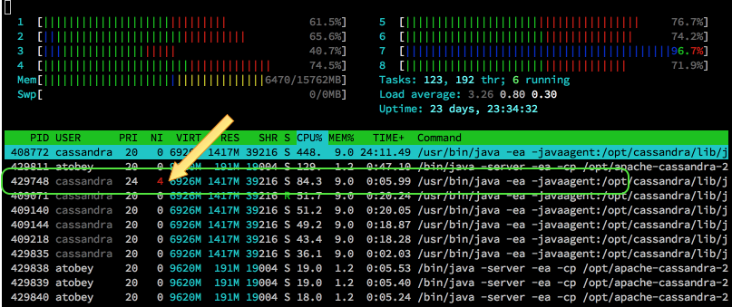
Linux has always used a 1:1 threading model and even uses the global pid space to assign ids to threads, so they're still visible if you know how to look for them. htop displays thread ids by default and standard top can do it if you hit H. With ps, the -L flag makes them show up. We can take advantage of this to do some prioritization and pinning outside of Cassandra so we don't have to wait around for features to make their way into DSE.
for tid in $(ps -eLo tid,args,nice |awk '/java.*4$/{print $1}')
do
taskset -pc 5-6 $tid # pin to cores 5 and 6
renice 20 $tid # set the lowest nice priority
ionice -c 2 -n 7 -p $tid # set IO to the lowest best-effort priority
done
After that, your htop will look more like this (load is done but compaction is still going):

Note: ionice requires the cfq IO scheduler, which is usually not the case in properly tuned systems. It is one of the main reasons for sticking with CFQ outside of Docker with io limits.
Credits
I did not come up with all of this on my own. The list of folks I've learned from even in just the last two years is excessively long. Thank you, all.